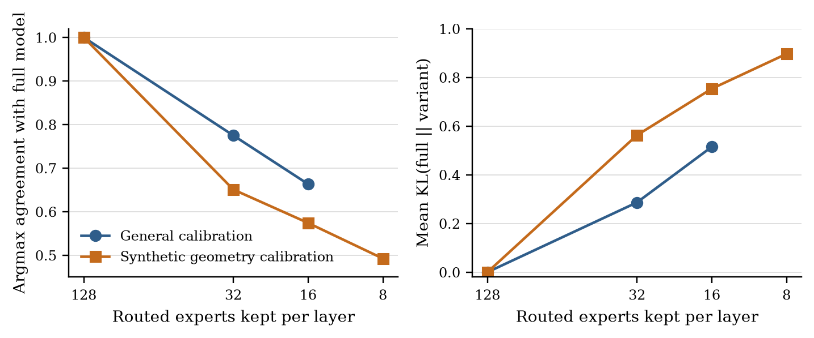
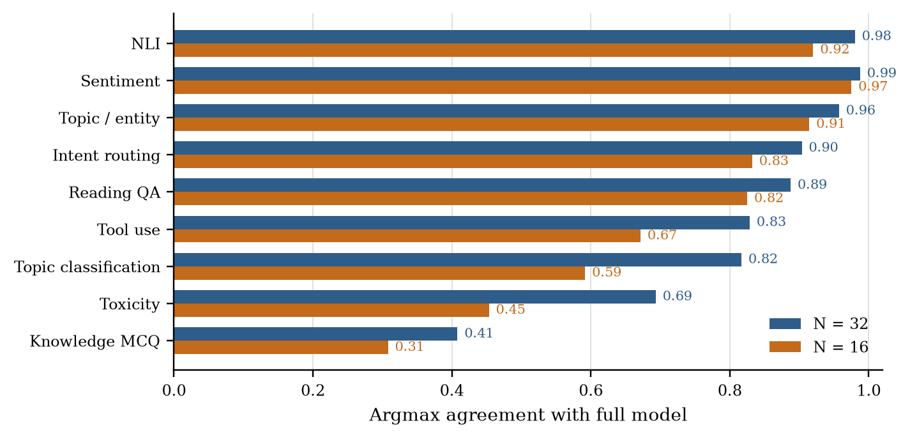
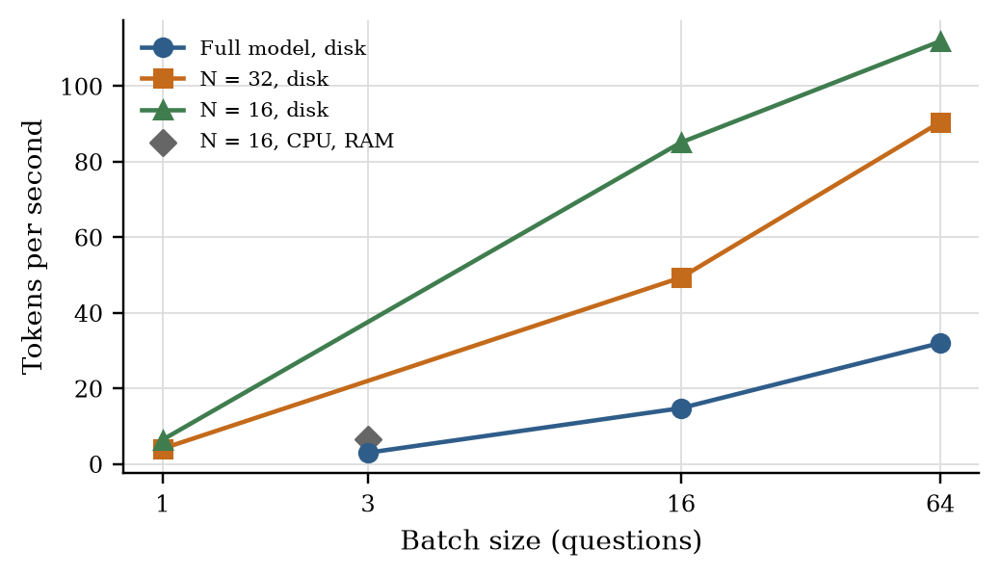
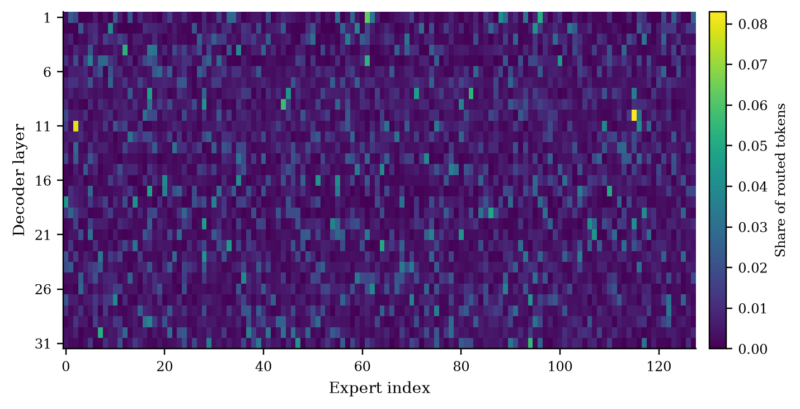

Prism on a Laptop
Pranav Krishnakumar
Abstract
Prism is a 105B-parameter mixture-of-experts decision model that returns a probability for every option of a typed question in one forward pass. Its FP8 weight set occupies 106.2 GB and the published implementation assumes a datacentre GPU. We build a streaming engine that reads one decoder layer at a time from an NVMe SSD and computes on an Intel Arc 140V integrated GPU. The full model reaches 32.02 tokens per second at batch size 64 and reproduces the argmax of the model card example, with a maximum absolute probability gap of 0.041383. Against the hosted API, the full model agrees on 0.9267 of 1,200 questions with mean KL 0.0474. We then remove routed experts by router saliency. Keeping 32 of 128 experts gives 0.7750 argmax agreement, but NLI, sentiment and intent routing stay above 0.90 while knowledge multiple choice falls to 0.4080 and Hindi, Bengali and Telugu fall to 0.6275, 0.6373 and 0.5833. Classification-style decisions survive aggressive expert pruning; knowledge and multilingual decisions do not.
Key figures




Results
| Check | Result |
|---|---|
| Layer check, FP32 vs reference, L0 / L1 | 3.40e-7 / 3.92e-7 |
| Layer check, BF16 vs reference, L0 / L1 | 2.92e-3 / 3.78e-3 |
| Model card example, maximum absolute gap | 0.041383 |
| Full model vs hosted API, argmax agreement | 0.9267 |
| Full model vs hosted API, mean KL | 0.0474 |
| Full model throughput, batch 64 | 32.02 tok/s |
| N=32, agreement / mean KL / accuracy drop | 0.7750 / 0.2866 / 11.00 pp |
| N=16, agreement / mean KL / accuracy drop | 0.6633 / 0.5148 / 18.83 pp |
BibTeX
@misc{krishnakumar2026prismlet,
title = {Prism on a Laptop: Streaming Inference of a 105B FP8
Mixture-of-Experts Decision Model and a Study of Expert Pruning},
author = {Krishnakumar, Pranav},
year = {2026},
note = {Technical report},
url = {https://prnvkk.github.io/Prismlet/}
}